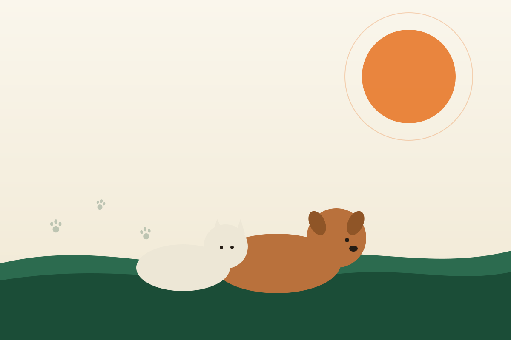

AWS SA
AWS SA
Veterinary Care
Affordable veterinary treatment for the pets of families across Cape Town.
Read more →Philippi, Cape Town
AWS SA provides veterinary care, adoption, sterilisation and animal welfare education for the Cape Town community. Whether you're looking to adopt, volunteer or support our work, there's a place for you here.

Who we are
Animal Welfare Society of South Africa (AWS SA) is based in Philippi, Cape Town, where our team provides veterinary treatment, runs sterilisation programmes, finds loving homes through adoption and educates the community on responsible animal care.
Learn more about AWS SA →Everything we do is guided by one goal: reducing animal suffering and building a community where every animal is treated with dignity. Our services are open to pet owners across the city, regardless of their ability to pay full veterinary rates.
See our services →What we do
Affordable veterinary treatment for the pets of families across Cape Town.
Read more →Helping rescued dogs, cats and other animals find safe, loving homes.
Read more →Sterilisation programmes that help manage the local animal population responsibly.
Read more →Community workshops and resources on responsible animal care.
Read more →Adopt a pet, volunteer your time, or sponsor an animal in our care — every bit of support makes a difference.